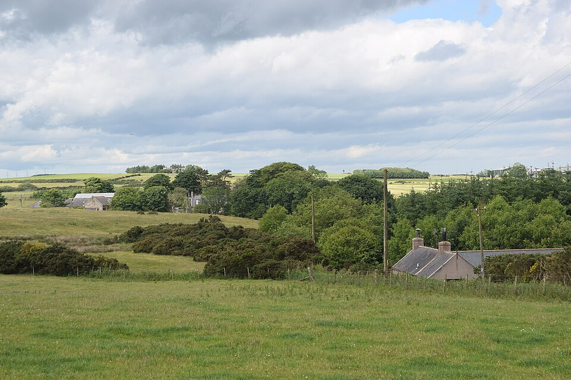

Agro Forte, Futuro Sustentável
O agronegócio é uma das principais atividades econômicas do Brasil e desempenha um papel fundamental na produção de alimentos, fibras e energia. Entretanto, produzir mais não significa explorar mais os recursos naturais. O desafio atual é unir produtividade e preservação ambiental.
Com planejamento, inovação e responsabilidade, é possível garantir o crescimento da produção agrícola sem comprometer os recursos necessários para as futuras gerações.

Tecnologia a Favor da Natureza
A agricultura moderna utiliza tecnologias como drones, sensores, sistemas de irrigação inteligente e monitoramento por satélite. Essas ferramentas permitem produzir mais utilizando menos água, menos insumos e reduzindo impactos ambientais.
A inovação contribui para o uso eficiente dos recursos naturais, tornando o campo mais produtivo, sustentável e preparado para os desafios do futuro.

Equilíbrio entre Produção e Meio Ambiente
A preservação das nascentes, o cuidado com o solo, a proteção da biodiversidade e o uso consciente da água são práticas fundamentais para uma agricultura sustentável.
Quando produtores rurais adotam boas práticas ambientais, toda a sociedade é beneficiada. O campo produz alimentos de qualidade enquanto contribui para a conservação da natureza.

Campo e Cidade: Uma Conexão Essencial
Tudo o que chega à mesa das famílias começa no campo. A produção agrícola abastece mercados, indústrias e cidades, fortalecendo a economia e garantindo a segurança alimentar.
Valorizar o trabalho dos produtores rurais é reconhecer a importância da conexão entre campo e cidade para a construção de um futuro mais sustentável.

Responsáveis pelo Projeto

Professor Responsável
Desenvolvimento do projeto sobre sustentabilidade, agro e preservação ambiental.

Estudante Participante
Pesquisa, produção de conteúdo e construção do site.